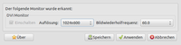
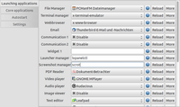
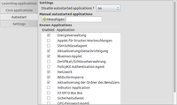
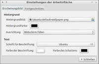
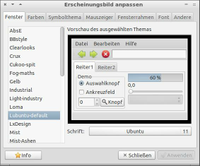
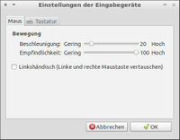
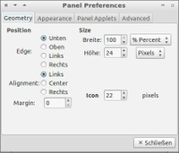
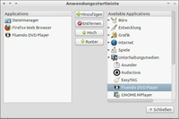

LXDE Einstellungen
Dieser Artikel wurde für die folgenden Ubuntu-Versionen getestet:
Ubuntu 17.10 Artful Aardvark
Ubuntu 16.04 Xenial Xerus
Zum Verständnis dieses Artikels sind folgende Seiten hilfreich:
Archive entpacken, optional
Root-Rechte, optional
Einen Editor öffnen, optional
Rechte für Dateien und Ordner ändern, optional
Ein Terminal öffnen, optional
Anwendungen hinzufügen, optional
- Benutzer und Gruppen
- Bildschirmeinstellungen
- Autostart und Sitzungseinstellungen (Defau...
- Desktop Einstellungen
- Erscheinungsbild anpassen
- Light-Locker Einstellungen
- Tastatur und Maus
- Openbox Konfiguration Manager
- Tastaturlayout
- Panel
- Erweitere Openbox-Einstellungen (lubuntu-r...
- Problembehebung
- Links
 LXDE und Lubuntu verfügen über kein zentrales Kontrollzentrum. Die Benutzer-Einstellungen sind mit unterschiedlichen Programmen vorzunehmen. Diese sind unter "Menü -> Einstellungen" oder unter "Menü -> Systemwerkzeuge" zu finden. Einige Einstellungen müssen durch manuelles Bearbeiten der entsprechenden Konfigurationsdatei vorgenommen werden. In einigen Fällen ist es möglich, Konfigurationstools nachzuinstallieren, die in der Grundinstallation von LXDE/Lubuntu nicht vorhanden sind (z.B. Menüeditor).
LXDE und Lubuntu verfügen über kein zentrales Kontrollzentrum. Die Benutzer-Einstellungen sind mit unterschiedlichen Programmen vorzunehmen. Diese sind unter "Menü -> Einstellungen" oder unter "Menü -> Systemwerkzeuge" zu finden. Einige Einstellungen müssen durch manuelles Bearbeiten der entsprechenden Konfigurationsdatei vorgenommen werden. In einigen Fällen ist es möglich, Konfigurationstools nachzuinstallieren, die in der Grundinstallation von LXDE/Lubuntu nicht vorhanden sind (z.B. Menüeditor).
Benutzer und Gruppen¶
Die grafische Verwaltung von Benutzerkonten wird über "Systemwerkzeuge -> Benutzer und Gruppen" aufgerufen (users-admin). Sie wird ausführlich im Artikel Benutzer und Gruppen Lubuntu beschrieben.
Bildschirmeinstellungen¶
|  |
| LXRandR |
Über "Einstellungen -> Bildschirmeinstellungen" kann die Auflösung sowie die Bildwiederholfrequenz des erkannten Monitors mit angepasst werden (lxrandr). Zur Konfiguration mehrerer Bildschirme bzw. deren Anordnung kann alternativ das Programm arandr verwendet werden.
Autostart und Sitzungseinstellungen (Default application for LXSession)¶
|  |
| LXSession default Apps (Launching Applications) |
Seit Lubuntu 13.10 sind die bisher durch von lxsession-edit abgedeckte Funktionen in das Konfigurations-Tool integriert, das unter Einstellungen -> Default applications for LXSession aufgerufen werden kann (lxsession-default-apps). Dieses Programm ist eine Entwicklung des Lubuntu-Teams und daher in reinen LXDE-Installationen nicht vorhanden.
Über Registerkarten können folgende Einstellungen aufgerufen werden
|  |
| LXSession default Apps (Autostart) |
"Launching Applications" - die Standards für Audiomanager, Abmeldedialog, Terminalemulator und anderes auswählen
"Core applications" - hier können die Programme festgelegt werden, die zur Darstellung des Desktops verwendet werden (Fenstermanager, Panel, Dock, Dateimanager, Energiemanagement usw.)
"Autostart" - die aktuellen Autostartprogramme angezeigt und neue hinzufügen
"Settings" - weitere Standardeinstellungen für die Sitzung auswählen bzw. ändern.
Das grafische Menü "Autostart" bietet im oberen Bereich "Manual autostarted applications" - und darunter "known Applications". Die oberen Einträge werden in der Datei ~/.config/lxsession/Lubuntu/autostart gespeichert, die Auswahl im unteren Feld erzeugt eine entsprechende *.desktop-Datei im Verzeichnis ~/.config/autostart/.
Eine genauere Beschreibung der beiden unterschiedlichen Autostartmechanismen findet sich unter Problembehebung im Abschnitt Autostart manuell bearbeiten .
Desktop Einstellungen¶
|  |
| Desktop |
Im Menü können unter "Einstellungen -> Desktop-Einstellungen" die Grundeinstellungen des Desktops geändert werden. Dasselbe ist per Rechtsklick  auf der Arbeitsoberfläche und mit der Auswahl "Desktop-Einstellungen" / "Einstellungen der Arbeitsfläche" möglich (pcmanfm --desktop-pref).
auf der Arbeitsoberfläche und mit der Auswahl "Desktop-Einstellungen" / "Einstellungen der Arbeitsfläche" möglich (pcmanfm --desktop-pref).
Neben dem Hintergrundbild und der Symbolgröße kann unter "Fortgeschritten" das klassische Kontextmenü (Rootmenü, ) von Openbox aktiviert werden (Details dazu gibt es hier). Die Rückkehr zum Standard-Kontextmenü von Lubuntu gestaltet sich schwieriger. Dazu in einem Terminalfenster den folgenden Befehl eingeben:
pcmanfm --desktop-pref
und im Reiter "Fortgeschritten" die Option wieder deaktivieren.
Bei Lubuntu 14.04 ist ein weiterer Reiter "Desktop-Symbole" hinzugekommen. So lassen sich zumindest einige wenige Symbole anzeigen. Mehr Komfort bietet die im Artikel Desktop-Symbole beschriebene Anleitung.
Erscheinungsbild anpassen¶
|  |
| LXAppearance |
lxappearance ist der Standard-Designwechsler von LXDE und ermöglicht die Anpassung des GTK+ Designs (Fensterinhalt), das Aussehen der Fensterrahmen und die verwendeten Symbole (Icons) sowie Mauszeiger. Man erreicht es über "Einstellungen -> Erscheinungsbild".
Wer die Fensterdekoration und die Symbole von Ubuntu auch unter LXDE haben möchte: das Projekt RAVEfinity  bietet Ambiance & Radiance Themes For Xfce & LXDE 14.04 und die Humanity Colors Icons an. Wer zu faul ist, sich mit der manuellen Installation auseinanderzusetzen, kann auch ein PPA nutzen.
bietet Ambiance & Radiance Themes For Xfce & LXDE 14.04 und die Humanity Colors Icons an. Wer zu faul ist, sich mit der manuellen Installation auseinanderzusetzen, kann auch ein PPA nutzen.
Hinweis!
Zusätzliche Fremdquellen können das System gefährden.
Light-Locker Einstellungen¶
Light-Locker dienst als Ersatz für den bis 13.10 verwendeten XScreenSaver. Dessen Konfiguration lässt sich über "Einstellungen -> Light Locker Einstellungen" aufrufen (light-locker-settings)
Tastatur und Maus¶
|  |
| Eingabegeräte |
Über "Einstellungen -> Tastatur und Maus" können Einstellungen am Verhalten der Maus (Beschleunigung, Empfindlichkeit und Rechts- bzw. Linkshänder) sowie der Tastatur (Verzögerung & Intervall) vorgenommen werden (lxinput)
Da kein Extra-Dialog zur Konfiguration des Touchpads vorhanden ist, sei an dieser Stelle auf den Artikel Touchpad verwiesen.
Möchte man die Doppelklickgeschwindigkeit anpassen, muss im Homeverzeichnis die Datei ~/.gtkrc-2.0 editiert bzw., falls nicht vorhanden, erstellt werden und folgende Zeile am Ende angefügt werden:
gtk-double-click-time=x
wobei für x die Dauer des Intervalls in Millisekunden einzusetzen ist (1000 entspräche also einer Sekunde). Die Änderung wird erst nach einer Neuanmeldung wirksam.
Um die Tastatursprache systemweit (und nicht nach jedem Neustart manuell) zu konfigurieren, hilft folgender Befehl weiter (erst ab Ubuntu 11.04 verfügbar):
sudo dpkg-reconfigure keyboard-configuration
Openbox Konfiguration Manager¶
Über "Einstellungen -> Openbox Konfiguration Manager" werden Aussehen und Verhalten der Komponenten des Fenstermanagers Openbox konfiguriert, auf dem der LXDE/Lubuntu-Desktop aufbaut (obconfig).
| Optionen | |
| Option | Beschreibung |
| "Thema" | Designauswahl (Fensterdekoration, Farben) |
| "Erscheinungsbild" | Schriftarten und Layout der Titelzeile eines Fensters |
| "Fenster" | spezielle Fensterfunktionen |
| "Verschieben und Größe ändern" | Verhalten bei Positions- und/oder Größenänderung eines Fensters |
| "Maus" | Fensterfokus und Verhalten beim Doppelklick der Titelzeile |
| "Arbeitsflächen" | Anzahl der virtuellen Desktops |
| "Ränder" | Verhalten der Randbereiche des Desktops |
| "Dock" | zusätzliche Symbol-/Programmleiste |
Daneben gibt es mit LXAppearance ein LXDE-eigenes Konfigurationsprogramm. Viele (nicht alle) Einstellungen, die in ObConf möglich sind, können auch in LXAppearance vorgenommen werden.
Vgl. auch unten den Abschnitt Erweiterte Opbenbox Einstellungen.
Openbox-Themen installieren¶
Weitere Designs (Themes) für Openbox können z.B. von box-look.org heruntergeladen, entpackt [1] und in den Ordner ~/.themes/ kopiert werden. Für eine systemweite Installation stattdessen mit Root-Rechten [2] nach /usr/share/themes/ kopieren.
Spezielle Designs für den Mauszeiger findet man beispielsweise auf xfce-look.org . Diese müssen abweichend nach ~/.icons/ bzw. mit Root-Rechten nach /usr/share/icons/ kopiert werden. Da sich Mauszeiger-Themen nicht mit ObConf auswählen lassen, nimmt man auch hierzu LXAppearance.
Tastaturlayout¶
Über "Einstellungen -> Tastatureingabemethoden" wird ein grafisches Programm zur Auswahl der IBus-Einstellungen gestartet (ibus-setup). Über den Reiter "Eingabemethode" können fremdsprachige Tastaturlayouts hinzugefügt werden. Sie sind über Rechtsklick auf das Keyboardsymbol im Benachrichtigungsfeld umzuschalten.
Seit Lubuntu 13.10 ist zur Anzeige des Tastaturlayouts das Panel-Plugin Keyboard Layout Handler ("Tastaturbelegungshandhaber") vorhanden.
In früheren Versionen wurde das Programm lxkeymap dazu genutzt, dessen Verwendung in zwei Schritten geschah:
Über LXKeymap und "Tools -> Show/hide profile -> Hinzufügen" ein weiteres Profil erstellen, das die gewünschte Sprache und das gewünschte Tastaturlayout enthält.
Dann im LXPanel unter "Panel-Einstellungen -> Panel-Erweiterungen -> Hinzufügen -> Tastaturbelegungsschalter" ausführen.
Panel¶
|  |
| LXPanel |
Das Panel (LXDE und Lubuntu verwenden lxpanel) bietet einige Einstellungsmöglichkeiten, die man über einen Rechtsklick auf eine leere Stelle im Panel erreicht.
Die Konfigurationsdateien werden im Verzeichnis ~/.config/lxpanel/LXDE/ (bei Lubuntu ~/.config/lxpanel/Lubuntu/) sowie dem Unterverzeichnis panels abgelegt. Wer das Panel optisch wie in GNOME 2 gestalten möchte (oben und unten am Bildschirmrand), findet im LXDE Wiki  passende Beispieldateien.
passende Beispieldateien.
Panel-Erweiterungen¶
Über  "Hinzufügen" / "Paneleinträge hinzufügen/entfernen" können weitere nützliche Programme (Applets) ergänzt oder entfernt werden. Bei einigen Programmen kann man über "Bearbeiten" weitere Einstellungen vornehmen.
"Hinzufügen" / "Paneleinträge hinzufügen/entfernen" können weitere nützliche Programme (Applets) ergänzt oder entfernt werden. Bei einigen Programmen kann man über "Bearbeiten" weitere Einstellungen vornehmen.
Im "Benachrichtigungsfeld" werden Programme angezeigt, die ein Statussymbol unterstützen, wie z.B. die Energieverwaltung, das Netzwerk-Manager und die Tastatureingabemethode.
Menü¶
Das "Menü" von LXPanel nutzt wie die Desktop-Umgebungen GNOME und Xfce die Menü-Informationen der einzelnen Ubuntu-Pakete. Hierdurch sind Programme direkt nach der Installation in den Menüs von LXDE verfügbar (siehe auch Menüeditor und Programmstarter).
Menüsymbol¶
Das Menüsymbol, also das Bild, das man anklicken muss, um in das Menü zu gelangen, kann einfach verändert werden: Rechtsklick auf das Menüsymbol, "Menüeinstellungen" anklicken, dann neuen Pfad "Auswählen". Das neue Symbol sollte idealerweise 256 Pixel in der Höhe haben.
Anwendungsstartleiste¶
|  |
| Anwendungsstartleiste |
Direkt rechts vom Menü befindet sich die Anwendungsstartleiste. Die Auswahl und die Anordnung der hinterlegten Programme kann verändert werden. Zusätzlich können Programmstarter auf dem Desktop (siehe hier) angelegt werden.
Zunächst Rechtsklick auf die Taskbar, dann "Paneleinträge hinzufügen/entfernen -> Anwendungsstartleiste -> Bearbeiten".
Zum Einfügen eines Programmes in die Anwendungsstarteiste wird das entsprechende Programm im rechten Bereich des Fensters ("Available Applications") aufgesucht, ausgewählt und dann mit "Hinzufügen" zum Anwendungsstartmenü hinzugefügt. Es erscheint dann im linken Bereich des Fensters ("Applications") in der Liste ganz unten.
Das Löschen oder Verschieben eines Anwendungsstartmenü-Eintrages passiert, indem man das Programm im linken Bereich anklickt und dann die Schaltflächen "Rauf", "Runter" oder "Löschen" bedient.
Problem hierbei: Bei extrem langen Exec-Zeilen der angeklickten Programme (z.B. WINE-Anwendungen) befinden sich die Schaltflächen "Rauf", "Runter" oder "Löschen" so weit rechts, dass sie manchmal nicht auf dem Monitor angezeigt werden. Das kann aber durch einen Trick (Fenster per Maus vergrößern und nach links über den Monitorrand hinausschieben) gelöst werden.
Energieverwaltung¶
Über ein entsprechendes Symbol im Benachrichtigungsfeld (neben der Uhr) des Panels gelangt man zur Energieverwaltung. Da LXDE kein eigenes Einstellungsprogramm bietet, verwendet Lubuntu den xfce4-power-manager.
Erweitere Openbox-Einstellungen (lubuntu-rc.xml)¶
Nicht alle Konfigurationen des Fenstermanagers Openbox können mit der grafischen Anwendung "Openbox Konfiguration Manager" vorgenommen werden. Für einige Einstellungen muss die Konfigurationsdatei rc.xml in einem Texteditor bearbeitet werden.
Je nach Sitzung sind hier verschiedene Dateien zu bearbeiten:
Openbox-Sitzung: ~/.config/openbox/rc.xml
LXDE-Sitzung: ~/.config/openbox/lxde-rc.xml
Lubuntu-Sitzung: ~/.config/openbox/lubuntu-rc.xml
Nach Änderungen muss die Datei gespeichert und die Änderungen mit dem Befehl openbox --reconfigure im Terminal (oder im Kontextmenü von Openbox) übernommen werden.
Tastaturkürzel (Shortcuts)¶
Für Shortcuts sind Kombinationen mit folgenden Funktionstasten möglich:
Strg = C;
Alt = A;
⇧ = S; XF86-Tasten, z.B. (XF86AudioRaiseVolume). Die Verknüpfung einer Tastenkombination mit dem Start eines Programmes muss im Abschnitt <keyboard> ... </keyboard> eingetragen werden.
Beispiel: Start des Editors Leafpad wird mit Strg + Alt + L verknüpft
<keybind key="C-A-l">
<action name="Execute">
<command>leafpad</command>
</action>
</keybind>Fensterverhalten für einzelne Anwendungen festlegen¶
Für jedes Programm kann im Abschnitt <applications> ... </applications>
gesondert festgelegt werden, wie das Fenster dargestellt wird, in dem das Programm startet. In folgendem Beispiel wird LXTerminal ohne Fensterdekoration auf der zweiten Arbeitsfläche mit vorgegebener Größe und Position geöffnet. Außerdem wird erzwungen, dass das gestartete Fenster nicht von anderen Fenstern überlappt wird (<focus>).
<application name="lxterminal">
<decor>no</decor>
<desktop>2</desktop>
<size>
<width>80%</width>
<height>50</height>
</size>
<position>
<x>-20</x>
<y>100</y>
</position>
<focus>yes</focus>
</application>Problembehebung¶
Automatische Anmeldung¶
Hinweis:
Eine automatische Anmeldung in Kombination mit einem verschlüsselten Homeverzeichnis ist keine gute Idee.
Zu LXDE gehört auch ein eigener Displaymanager: LXDM. Die automatische Anmeldung ist dort beschrieben. Lubuntu verwendet dagegen ab 12.04 LightDM (siehe auch LightDM-GTK+ Einstellungseditor).
Autostart manuell bearbeiten¶
Falls es beim Autostart Probleme gibt, die sich mit den grafischen Programmen LXSession bzw. Defaultapplications for LXSession nicht beheben lassen, ist es sinnvoll, die entsprechenden Dateien manuell zu bearbeiten.
Der Autostart einer LXDE-Sitzung kann auf zwei unterschiedliche Arten konfiguriert werden.
Konform mit freedesktop.org¶
LXDE kann wie GNOME und Xfce die Autostart-Mechanismen von Freedesktop.org für den automatischen Start von Anwendungen beim Anmelden (Login) nutzen. Die den jeweiligen Programmen zugeordneten .desktop-Dateien, die normalerweise unter /usr/share/applications/ gespeichert sind, werden dazu in den Ordner ~/.config/autostart/ im Homeverzeichnis kopiert.
Damit ein Programm aus dem Verzeichnis ~/.config/autostart/ beim Start der Sitzung tatsächlich automatisch startet, muss der Dateiname auf .desktop enden. Dabei ist zu beachten, dass viele Dateimanager in der Standardansicht nicht den Dateinamen, sondern den in der Datei definierten Namen von .desktop-Dateien anzeigen. Das Bearbeiten von .desktop-Dateien aus Nautilus heraus ist sehr umständlich bis unmöglich (PCManFM oder ein Terminal verwenden).
Falls keine entsprechende .desktop-Datei vorhanden ist, kann sie beispielsweise mit LXShortcut erstellt werden. Weitere Information zu .desktop-Dateien findet man in den Artikeln Programmstarter und Autostart Anwendungen mit .desktop Dateien .
Außerdem ist zu beachten, dass .desktop-Dateien keine Zeile wie OnlyShowIn=GNOME enthalten dürfen, wenn sie in LXDE ausgeführt werden sollen. Umgekehrt kann durch einen Eintrag NotShowIn=LXDE der Autostart von Anwendungen aus den systemweiten Einstellungen in /etc/xdg/autostart/ für LXDE und Lubuntu unterbunden werden.
Konfiguration von lxsession¶
Ähnlich wie in Openbox lädt LXDE auch Programme beim Sitzungsstart, die in einer Datei autostart eingetragen sind. Diese Datei ist kein ausführbares Skript, sondern eine einfache Textdatei, in die die gewünschten Programmstarts zeilenweise eingetragen werden. Ein vorangestelltes @ bewirkt, dass der Programmstart wiederholt wird, wenn er nicht erfolgreich war (damit entfällt die in Openbox gelegentlich notwendige Verwendung von sleep zur Verzögerung des Starts).
Es ist darauf zu achten, dass je nach Sitzungsprofil andere Pfade verwendet werden: Programme, die für alle Benutzer unter LXDE gestartet werden sollen, werden in /etc/xdg/lxsession/PROFIL/autostart eingetragen. Für einzelne Benutzer erfolgt der Eintrag in ~/.config/lxsession/PROFIL/autostart. Sind beide Dateien vorhanden, wird nur die im Homeverzeichnis verwendet. Die Standardprofile (PROFIL) sind LXDE bzw. Lubuntu.
Nicht-grafische Programme und Dienste, die allen Benutzern zur Verfügung stehen sollen, können außerdem mit Root-Rechten über den systemweiten Autostart-Mechanismus von Openbox in der Datei /etc/xdg/openbox/autostart eingetragen oder über die Datei /etc/rc.local gestartet werden.
Autostartprobleme unter Lubuntu 14.04¶
Aufgrund eines Bugs werden Autostartdateien, die in /etc/xdg/autostart hinterlegt sind, nicht abgearbeitet. Wichtige Dienste (wie die Netzwerk-, Energie-, Aktualisierungsverwaltung) werden damit nicht gestartet. Durch Einspielen der verfügbaren Sicherheitsaktualisierungen oder durch Installation von Lubuntu 14.04.1 wird dieser Fehler behoben.
Benachrichtigungsdienst¶
Um die Position der Benachrichtigungsfelder zu ändern, ist der Artikel Benachrichtigungsdienst zu Rate zu ziehen.
Desktopsymbole¶
Um Symbole auf der Arbeitsfläche zu erstellen, werden .desktop-Dateien verwendet. Weitere Informationen zum Aufbau dieser Dateien enthält der Artikel Programmstarter. Man kann auch bereits vorhandene Programme aus dem Ordner /usr/share/applications in den eigenen Desktop-Ordner kopieren. Dieser Ordner im Homeverzeichnis heißt "Arbeitsfläche" (früher "Desktop"). Konkrete Beispiele sind im Artikel Desktop-Symbole zu finden.
Menü erscheint nicht¶
Dieses Skript [3] [4] repariert das Menü:
1 2 3 4 5 6 | #!/bin/bash killall lxpanel file=`find ~/.cache/menus -name "*" -type f` rm ${file} lxpanel -p LXDE & |
Unter einem aussagekräftigen Namen abspeichern und im Terminal [5] ausführen. LXPanel wird beendet, der Cache geleert und das Panel erneut gestartet. Detaillierte Information sind im Wiki von LXDE.org zu finden.
Unter Lubuntu muss die letzte Zeile durch
1 | lxpanel -p Lubuntu &
|
ersetzt werden. Welche Variante konkret verwendet wird, kann man durch den Befehl:
ps -fC lxpanel
herausbekommen.
Mauszeigergeschwindigkeit¶
Bei den Einstellungen zur Mauszeigergeschwindigkeit scheint es teilweise Probleme zu geben. Dann muss man den Befehl
xset mouse x y
verwenden (siehe Diskussion).
Zu große/kleine Schrift / dpi einstellen¶
Die aktuelle dpi-Einstellung kann mit
xdpyinfo | grep resolution
abgefragt werden, Standard ist meist 96 dpi. Änderungen können in der Datei ~/.Xresources vorgenommen werden:
Xft.dpi: 144
Wenn möglich, eine Zahl verwenden, die ein Vielfaches von 6 oder 12 ist (Quelle für diese Einschränkung: www-archive.mozilla.org ). Alternativ kann diese Änderung auch in der ~/.Xdefaults erfolgen. Falls diese User Spezifische Konfiguration nicht funktioniert, z.B. bei Systemen mit dem proprietären nvidia Grafikkartentreiber, kann die dpi Einstellung auch Global für das ganze System in der /etc/X11/xorg.conf erfolgen:
Section "Monitor"
Identifier "Monitor0"
Option "DPI" "96 x 96"
EndSection

 Übersichtsartikel
Übersichtsartikel- Erstellt mit Inyoka
-
 2004 – 2017 ubuntuusers.de • Einige Rechte vorbehalten
2004 – 2017 ubuntuusers.de • Einige Rechte vorbehalten
Lizenz • Kontakt • Datenschutz • Impressum • Serverstatus -
Serverhousing gespendet von